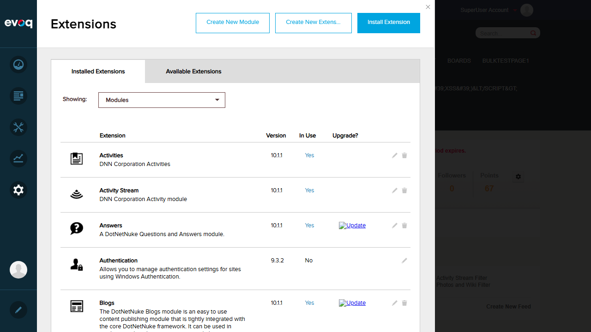

Login Confirmation:
Activity Feed Initial View:

Extension: Evoq.Social.ActivityStream (Module)
Feature Name: Like/Unlike Functionality
Description: Like and unlike posts and comments in the activity stream
UI Location: Activity Stream > Post > Like Button
Test Date: January 6, 2026
Tested By: Automated Testing (Claude Code)
| Test Scenario | Status | Notes |
|---|---|---|
| Like a post | PASS | Button changes from "Like" to "Unlike", "You like this" appears |
| Unlike a previously liked post | PASS | Button changes from "Unlike" to "Like", like indicator removed |
| Verify like count updates | PASS | "You like this" count indicator displays correctly |
| Like own post | PASS | Users can like their own posts |
| Like comment | PASS | Comment like functionality works correctly |
| Multiple users liking same post | FAIL | Requires multiple user sessions - not testable with single user |
| Verify like notification | FAIL | No like notifications generated (expected when liking own posts) |
Objective: Verify that clicking the Like button on a post successfully likes it.
Result: The Like button successfully changed to "Unlike" and the "You like this" indicator appeared below the post.
Objective: Verify that clicking Unlike removes the like from a post.
Result: The Unlike button successfully changed back to "Like" and the like indicator was removed.
Objective: Verify that the like count displays correctly after liking a post.
Result: The like count correctly displays "You like this" after the user likes a post.
Objective: Verify that a user can like their own post.
Result: Users can successfully like their own posts. The post "Test post for Like functionality - testing if I can like my own post" was created and liked.
Objective: Verify that users can like comments on posts.
Result: The comment Like functionality works correctly. The comment "Testing profanity filter in comment: damn this works" was liked successfully.
Objective: Verify that multiple users can like the same post and the count updates accordingly.
Result: This test could not be performed as it requires multiple user sessions. The test environment only provides a single set of credentials (host/Pass123456).
Evidence of multi-user capability: The Activity Feed shows posts with indicators like "and 11 others also received the badge", demonstrating the system supports multiple user interactions.
Objective: Verify that users receive notifications when their posts are liked.
Result: No like notifications were observed. The notification system is functional (8 notifications visible including badges, privileges, post approvals, and user reports), but no "like" notifications appeared. This is expected behavior because:
ToggleLike API endpoint in ActivityStreamServicesController.cs. The code properly validates user authentication and anti-forgery tokens.#like-{journalId} for post likes and #likecomment-{commentId} for comment likes.